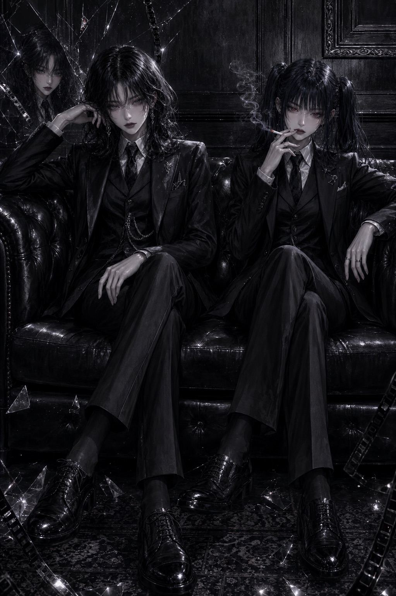
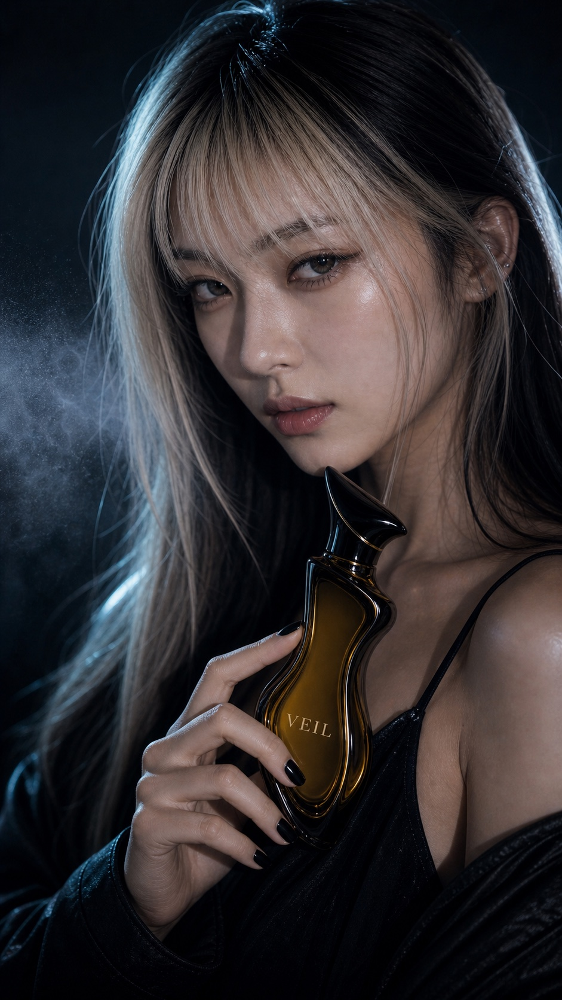
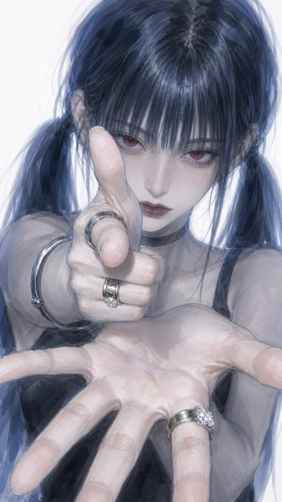
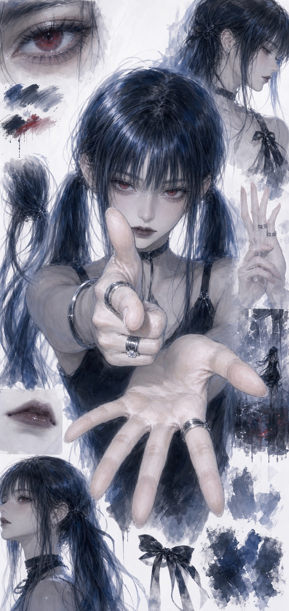

18초 광고 구성
제품 실루엣, 분사 미스트, 모델 클로즈업, 옥외광고 컷을 2초 단위로 이어붙이는 구조.

Part 1 / VEIL
VEIL은 밤의 잔향, 블랙 글래스, 앰버 코어, 미스트 입자를 중심으로 만든 가상 프리미엄 프래그런스 브랜드입니다. 숏폼 광고와 캠페인 세트를 같은 비주얼 규칙으로 묶어 상업 광고 포트폴리오처럼 보이게 구성했습니다.
AI Short-form Ad
제품 실루엣, 분사 미스트, 모델 클로즈업, 옥외광고 컷을 2초 단위로 이어붙이는 구조.
검은 병 실루엣과 미스트를 먼저 보여주며 브랜드 톤을 각인.
검은 네일, 앰버 유리, 젖은 도시 조명으로 촉감과 분위기를 강화.
VEIL 로고가 보이는 제품 컷과 옥외광고 컷으로 마무리.
Virtual Campaign
Leave Only The Trace.
제품 병의 곡선 실루엣, 병 표면 로고, 열린 뚜껑 상태, 검은 네일, 시안 림라이트를 반복 기준으로 잡아 같은 브랜드에서 나온 이미지처럼 정리했습니다.





Production Harness
가상 향수 브랜드 VEIL을 만들고 밤, 잔향, 미스트, 블랙 글래스라는 키워드를 고정.
곡선형 병 실루엣, 앰버 코어, 병 표면 로고, 열린 뚜껑 상태를 기준 자산으로 정리.
레퍼런스, 제품 컷, 모델 컷, 옥외광고 컷을 분리해 생성하고 같은 브랜드 규칙으로 묶음.
로고 위치, 네일 색상, 병 뚜껑 상태, 구도 유지 여부를 확인하며 컷별로 다시 생성.
Part 2 / SAINT
SAINT는 Yura / Yuri 캐릭터 세계관을 중심으로 만든 두 번째 파트입니다. 오프닝 영상, 캐릭터 일관성, 이미지 보정, 프롬프트 수정 과정을 한 흐름으로 묶었습니다.
Anime Opening
Yura / Yuri 세계관의 다크 판타지 톤을 영상으로 보여주는 오프닝 사례.
Character Consistency



Before / After



SAINT Package
캐릭터, 키비주얼, 세계관, 스토리 플로우, 영상, 프롬프트 로그를 하나의 제작 패키지처럼 묶은 SAINT 파트의 기준 보드입니다.
Production Process
포트폴리오 목적, 결과물 종류, 필요한 장면 수, 영상 구성 방식을 먼저 고정.
캐릭터 얼굴, 헤어, 색감, 의상, 세계관 톤을 기준 이미지로 정리.
장면 목적, 카메라, 조명, 색감, 금지 요소를 포함한 생성 프롬프트 작성.
일관성 오류, 손/얼굴 문제, 색감 이탈, 과한 텍스트를 수정 프롬프트로 보정.
무거운 영상 파일은 제외하고 외부 영상 슬롯과 압축 이미지로 구성.
Prompt Archive
캐릭터의 얼굴, 헤어, 의상, 표정, 반복 기준을 잠그는 프롬프트.
초반 후킹, 장면 전환, 카메라 움직임, 결말 프레임을 정리하는 영상 프롬프트.
이미지 실패 지점과 보정 목표를 분리해 다시 생성하거나 리터칭하는 프롬프트.